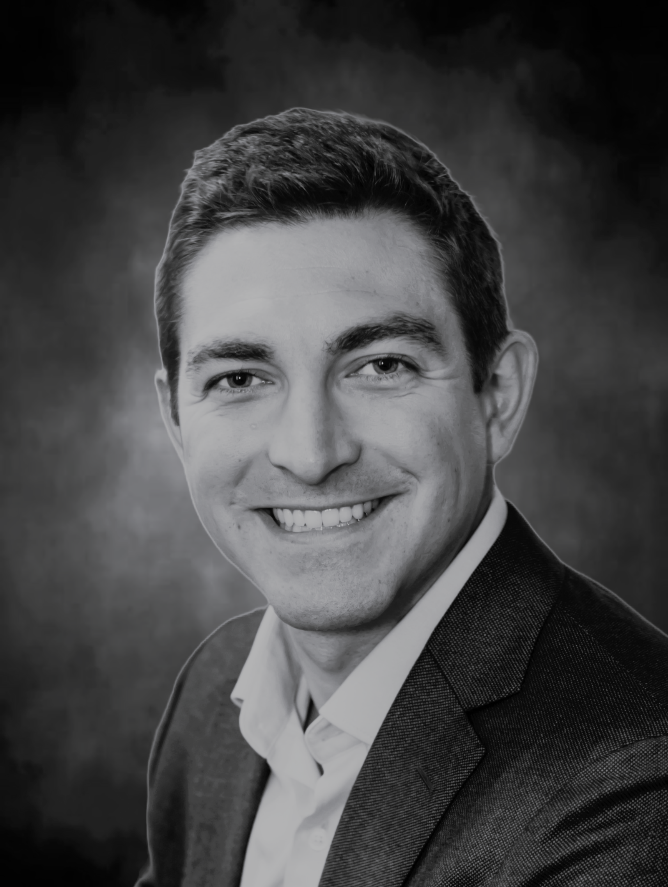

Team
Operators first,
investors second.
We built DalFort Capital around a simple idea: the best investment partners are the ones
who've actually run businesses. Every member of our team brings real operating experience
to the table, not just capital.
Bryan is the Managing Partner of DalFort Capital Partners. Prior to DalFort, he focused on acquisitions in the industrial, specialty chemical, and building products sectors for Capital Southwest Corporation (NASDAQ: CSWC) and subsequently led lower middle market credit initiatives following the spin-off of CSW Industrials. He received an MBA from SMU's Cox School of Business and a BBA in Accounting from the University of Central Arkansas.
Bryan Bailey
Managing Partner
Marquez is a Partner at DalFort Capital Partners. Prior to DalFort, he focused on lower middle market investments at Rosewood Private Investments and Capital Southwest Corporation (NASDAQ: CSWC). Earlier in his career, he worked at Covalent Capital, SKM Growth Investors, and Goldman Sachs. He received a BA and BBA from the University of Texas.
Marquez Bela
Partner
Hillary serves as Chief Financial Officer for DalFort Capital Partners. Prior to DalFort, she spent two years as Vice President in Goldman Sachs' Asset Management Division and nine years with Ernst & Young focused on financial due diligence for buy-side and sell-side transactions. Hillary graduated from Texas A&M University with an MS in Accounting and is a Certified Public Accountant.
Hillary Brown
Chief Financial Officer
Kelly serves as Chief of Staff at DalFort Capital Partners. Prior to DalFort, she spent over two years as Senior Executive Assistant at Texas Capital Bank. Earlier in her career, she served as Deputy Chief of Staff and Director of Operations for U.S. Congressman Michael T. McCaul (R-Texas). Kelly graduated from the University of Alabama with a BA in Criminal Justice, Sociology, and Criminal Law.
Kelly Cotner
Chief of Staff
Jack is a Vice President at DalFort Capital Partners. Prior to DalFort, he focused on mergers and acquisitions in the oil and gas sector for Wells Fargo Securities within its Investment Banking Division. Jack received a BBA in Accounting and a Masters of Financial Management from Texas A&M University.
Jack Lindsley
Vice President

Preston is a Vice President at DalFort Capital Partners. Prior to DalFort, he was a Senior Associate at Blue Sage Capital, an operationally focused lower middle market private equity firm, and began his career as an Analyst in Raymond James' Investment Banking Division focused on M&A in environmental and industrial services. He graduated magna cum laude from Baylor University with a BBA in Finance and Accounting.
Preston Arnold
Vice President
Tyler is a Senior Associate at DalFort Capital Partners. Prior to DalFort, he spent three years as an Associate at Stronghold Investment Management, a middle market private equity firm focused on the energy sector, and began his career as an Investment Banking Analyst at Bank of America Merrill Lynch in their Energy & Power group. He graduated magna cum laude from SMU with a BBA in Finance.
Tyler Forcum
Senior Associate
Wills is an Associate at DalFort Capital Partners. Prior to joining full-time, he interned with the DalFort team while completing his undergraduate degree. He received a BBA in Finance with a specialization in Entrepreneurship from Southern Methodist University.
Wills Thompson
Associate
Jack is an Analyst at DalFort Capital Partners. He received a BBA from the University of Missouri.
Jack Richards
Analyst
Operating Partners & Advisors
Rob Pawlak serves on the board of Key Polymer. He was formerly President of VersaFlex Inc., a specialty coating manufacturer and DalFort portfolio company acquired by PPG in February 2021, and also served as COO of VersaFlex following its merger with Raven Lining Systems. Rob had been affiliated with Raven since 1995, serving as President from 2009, and was CFO of Cohesant, Raven's parent company, since 1998. He holds an MBA and BS in Business from Indiana University's Kelley School of Business.
Rob Pawlak
Operating Partner
Tom Edwards is CEO and President of TRE Consulting LLC. His 30 years of manufacturing and distribution leadership includes executive roles at Johnson Controls, Trane, and Ruskin Co. As President of Ruskin, Tom guided the company through quadruple revenue growth via organic initiatives and strategic add-on acquisitions. He holds an MBA from Penn State University and a BS in Materials and Manufacturing Engineering from the University of Wisconsin.
Tom Edwards
Operating Partner
Morris Wheeler is the founder and managing member of Drummond Road Capital. He previously served as Chairman and CEO of Cohesant Technologies, where investors realized a 28% annualized return culminating in a sale to Graco Inc. in 2008. Earlier in his career, Morris founded one of the first internet music distribution platforms, which was acquired in the early 2000s. He studied Economics and Computer Science at UMass Amherst and earned his JD from Yale Law School.
Morris Wheeler
Senior Fund Advisor